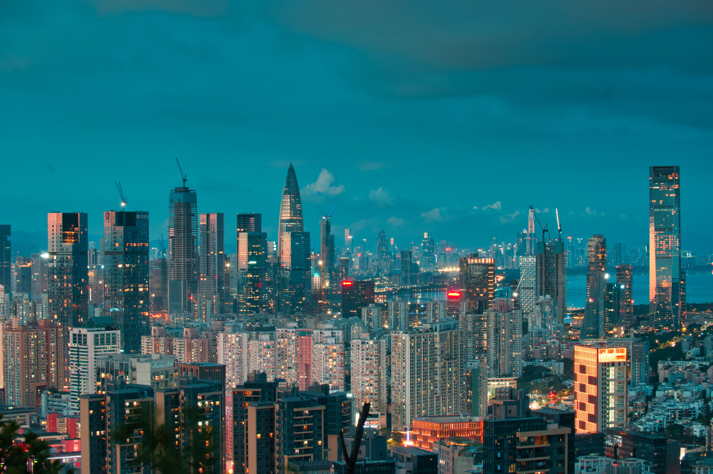

DESTINATION GUIDE

DESTINATION GUIDE
深圳立于珠江口东岸，是粤港澳大湾区的创新引擎与面向世界的活力城市。毗邻香港，宝安国际机场、口岸与城际交通网络汇聚，使其成为连接内地与全球的重要节点。
位于广东南部，毗邻香港，面向珠江口，是大湾区的重要节点城市。
亚热带季风气候
全年温暖、阳光充足，夏季炎热多雨，冬季温和少寒，具有鲜明的南方滨海气候特征。
改革开放后，深圳于1980年设立经济特区，城市建设与产业发展由此进入新阶段。
移民城市的多元背景，科技、设计与年轻开放的生活方式，构成了其鲜明的当代文化。
跨区通勤距离较长，建议提前规划；夏秋请关注台风和暴雨预警。